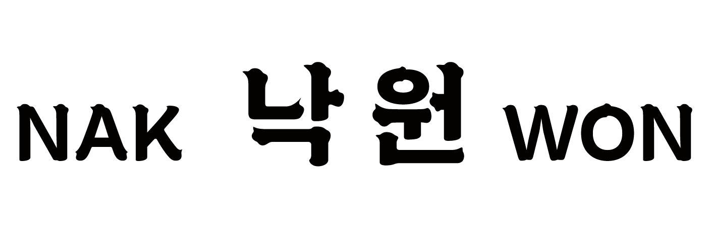

꿈의 낙원 / A PARADISE OF DREAM 'NAKWON'
프로젝트 소개
낙원 프로젝트는 종로구 낙원상가를 중심으로 한 인터뷰 기반 다큐멘터리다. 노인 음악가, 상인, 그리고 이 거리를 구성하는 사람들의 목소리를 기록한다.
젊은 세대가 알지 못했던 음악 문화와 장소의 기억을 영상, 인쇄물, 사진으로 남긴다.

꿈의 낙원 / A PARADISE OF DREAM 'NAKWON'
낙원 프로젝트는 종로구 낙원상가를 중심으로 한 인터뷰 기반 다큐멘터리다. 노인 음악가, 상인, 그리고 이 거리를 구성하는 사람들의 목소리를 기록한다.
젊은 세대가 알지 못했던 음악 문화와 장소의 기억을 영상, 인쇄물, 사진으로 남긴다.